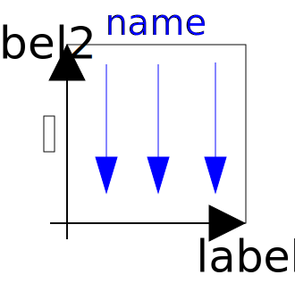

Library MultiBody is a free Modelica package providing 3-dimensional mechanical components to model in a convenient way mechanical systems, such as robots, mechanisms, vehicles. Typical animations generated with this library are shown in the next figure:

For an introduction, have especially a look at:
Copyright © 1998-2018, Modelica Association and contributors
| Name | Description |
|---|---|
| User's Guide of MultiBody Library | |
|  World | World coordinate system + gravity field + default animation definition |
| Examples that demonstrate the usage of the MultiBody library | |
| Components that exert forces and/or torques between frames | |
| Functions to transform rotational frame quantities | |
| Connectors and partial models for 3-dim. mechanical components | |
| Components that constrain the motion between two frames | |
| Rigid components such as bodies with mass and inertia and massless rods | |
| Sensors to measure variables | |
| 3-dimensional visual objects used for animation | |
| Constants and types with choices, especially to build menus | |
| Icons for MultiBody package |